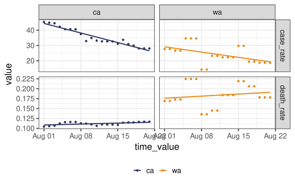

[1] 1[1] 3 4[1] 4 3 1[1] 1 3 4 1 3 4Stat 406
Daniel J. McDonald
Last modified – 17 August 2023
\[ \DeclareMathOperator*{\argmin}{argmin} \DeclareMathOperator*{\argmax}{argmax} \DeclareMathOperator*{\minimize}{minimize} \DeclareMathOperator*{\maximize}{maximize} \DeclareMathOperator*{\find}{find} \DeclareMathOperator{\st}{subject\,\,to} \]
Things to note
Data frames are sort-of lists and sort-of matrices
These are {tidyverse} data frames
# A tibble: 5 × 3
z b c
<int> <dbl> <chr>
1 1 6 a
2 2 7 b
3 3 8 c
4 4 9 d
5 5 10 e [1] "tbl_df" "tbl" "data.frame"We’ll return to classes in a moment. A tbl_df is a “subclass” of data.frame.
Anything that data.frame can do, tbl_df can do (better).
For instance, the printing is more informative.
Also, you can construct one by referencing previously constructed columns.
fn <- function(formula, data, subset, weights, na.action, method = "qr", model
= TRUE, x = FALSE, y = FALSE, qr = TRUE, singular.ok = TRUE, contrasts =
NULL, offset, ...)fn <- function(e1, e2)fn <- function(.data, ..., .by = NULL, .preserve = FALSE)fn <- function(x, filter, method = c("convolution", "recursive"), sides = 2,
circular = FALSE, init = NULL)fn <- function(n, mean = 0, sd = 1)[1] 0.5855288 0.7094660 -0.1093033[1] 0.5855288 0.7094660 -0.1093033[1] 0.5855288 0.7094660 -0.1093033[1] 0.5855288 0.7094660 -0.1093033hist functionList of 6
$ breaks : num [1:14] -3 -2.5 -2 -1.5 -1 -0.5 0 0.5 1 1.5 ...
$ counts : int [1:13] 4 21 41 89 142 200 193 170 74 38 ...
$ density : num [1:13] 0.008 0.042 0.082 0.178 0.284 0.4 0.386 0.34 0.148 0.076 ...
$ mids : num [1:13] -2.75 -2.25 -1.75 -1.25 -0.75 -0.25 0.25 0.75 1.25 1.75 ...
$ xname : chr "rnorm(1000)"
$ equidist: logi TRUE
- attr(*, "class")= chr "histogram"[1] "histogram"[1] 3[1] 2 3 4 5Error in x + 1: non-numeric argument to binary operatorincrementer <- function(x, inc_by = 1) {
if (!is.numeric(x)) {
stop("`x` must be numeric")
}
x + 1
}
incrementer("a")Error in incrementer("a"): `x` must be numeric[1] 3incrementer <- function(x, inc_by = 1) {
if (!is.numeric(x)) {
stop("`x` must be numeric")
}
x + inc_by
}
incrementer(2, -3)[1] -1library(testthat)
incrementer <- function(x, inc_by = 1) {
if (!is.numeric(x)) {
stop("`x` must be numeric")
}
if (!is.numeric(inc_by)) {
stop("`inc_by` must be numeric")
}
x + inc_by
}
expect_error(incrementer("a"))
expect_equal(incrementer(1:3), 2:4)
expect_equal(incrementer(2, -3), -1)
expect_error(incrementer(1, "b"))
expect_identical(incrementer(1:3), 2:4)Error: incrementer(1:3) not identical to 2:4.
Objects equal but not identicalImportant
If you copy something, write a function.
Validate your arguments.
To ensure proper functionality, write tests to check if inputs result in predicted outputs.
We saw some of these earlier:
tib <- tibble(
x1 = rnorm(100),
x2 = rnorm(100),
y = x1 + 2 * x2 + rnorm(100)
)
mdl <- lm(y ~ ., data = tib )
class(tib)[1] "tbl_df" "tbl" "data.frame"[1] "lm"The class allows for the use of “methods”
R “knows what to do” when you print() an object of class "lm".
print() is called a “generic” function.
You can create “methods” that get dispatched.
For any generic, R looks for a method for the class.
If available, it calls that function.
There are lots of generic functions in R
Common ones are print(), summary(), and plot().
Also, lots of important statistical modelling concepts: residuals() coef()
(In python, these work the opposite way: obj.residuals. The dot after the object accesses methods defined for that type of object. But the dispatch behaviour is less robust.)
The convention is that the specialized function is named method.class, e.g., summary.lm.
If no specialized function is defined, R will try to use method.default.
For this reason, R programmers try to avoid . in names of functions or objects.
The advantage is that you don’t have to learn a totally new syntax to grab residuals or plot things
You just use residuals(mdl) whether mdl comes from lm could have been done two centuries ago, or a Batrachian Emphasis Machine which won’t be invented for another five years.
The one draw-back is the help pages for the generic methods tend to be pretty vague
Compare ?summary with ?summary.lm.
These are often tricky, but are very common.
Most programming languages have this concept in one way or another.
In R code run in the Console produces objects in the “Global environment”
You can see what you create in the “Environment” tab.
But there’s lots of other stuff.
Many packages are automatically loaded at startup, so you have access to the functions and data inside
For example mean(), lm(), plot(), iris (technically iris is lazy-loaded, meaning it’s not in memory until you call it, but it is available)
Other packages require you to load them with library(pkg) before their functions are available.
But, you can call those functions by prefixing the package name ggplot2::ggplot().
You can also access functions that the package developer didn’t “export” for use with ::: like dplyr:::as_across_fn_call()
As one might expect, functions create an environment inside the function.
Non-trivial cases are data-masking environments.
Error in eval(expr, envir, enclos): object 'x2' not foundlm() looks “inside” the tib to find y and x2lm environmentWhen Knit, .Rmd files run in their OWN environment.
They are run from top to bottom, with code chunks depending on previous
This makes them reproducible.
Jupyter notebooks don’t do this. 😱
Objects in your local environment are not available in the .Rmd
Objects in the .Rmd are not available locally.
Tip
The most frequent error I see is:
The reason is almost always that the chunks refer to objects in the Environment that don’t exist in the .Rmd
library() calls were made globally but not in the .Rmd
.Rmd in your file system
?function to see the help
.Rmd won’t Knit
rstudioapi::restartSession(), then run the Chunks 1-by-1Adding browser()
browser() to the code somewherebrowser() and you’ll have access to the local objects (and the global objects) to play aroundQuestion I get on Slack that I hate:
“I ran the code like you had on Slide 39, but it didn’t work.”
Don’t just paste a screenshot!
Unless you get lucky, I won’t be able to figure it out from that. And we’ll both get frustrated.
What you need is a Reproducible Example or reprex.
The best way to do this is with the {reprex} package.
Open a new .R script.
Paste your buggy code in the file (no need to save)
Edit your code to make sure it’s “enough to produce the error” and nothing more. (By rerunning the code a few times.)
Copy your code.
Call reprex::reprex(venue = "r") from the console. This will run your code in a new environment and show the result in the Viewer tab. Does it create the error you expect?
If it creates other errors, that may be the problem. You may fix the bug on your own!
If it doesn’t have errors, then your global environment is Farblunget.
The Output is now on your clipboard. Go to Slack and paste it in a message. Then press Cmd+Shift+Enter (on Mac) or Ctrl+Shift+Enter (Windows/Linux). Under Type, select R.
Send the message, perhaps with more description and an SOS emoji.
Note
Because Reprex runs in it’s own environment, it doesn’t have access to any of the libraries you loaded or the stuff in your global environment. You’ll have to load these things in the script.
{tidyverse}{tidyverse} is hugeCore tidyverse is nearly 30 different R packages, but we’re going to just talk about a few of them.
Falls roughly into a few categories:
{magrittr} and many many others.{dplyr} and many others.{ggplot2} and some others like {scales}.We’re going to talk quickly about some of it, but ignore much of 2.
There’s a lot that’s great about these packages, especially ease of data processing.
But it doesn’t always jive with base R (it’s almost a separate proglang at this point).
This was introduced by {magrittr} as %>%,
but is now in base R (>=4.1.0) as |>.
Note: there are other pipes in {magrittr} (e.g. %$% and %T%) but I’ve never used them.
I’ve used the old version for so long, that it’s hard for me to adopt the new one.
The point of the pipe is to logically sequence nested operations
It may seem like we should push this all the way
This works, but it’s really annoying.
{dplyr}This package has all sorts of things. And it interacts with {tibble} generally.
The basic idea is “tibble in, tibble out”.
Satisfies data masking which means you can refer to columns by name or use helpers like ends_with("_rate")
Majorly useful operations:
select() (chooses columns to keep)mutate() (showed this already)group_by()pivot_longer() and pivot_wider()left_join() and full_join()summarise()Note
filter() and select() are functions in Base R.
Sometimes you get 🐞 because it called the wrong version.
To be sure, prefix it like dplyr::select().
library(epidatr)
covid <- covidcast(
data_source = "jhu-csse",
signals = "confirmed_7dav_incidence_prop,deaths_7dav_incidence_prop",
time_type = "day",
geo_type = "state",
time_values = epirange(20220801, 20220821),
geo_values = "ca,wa") |>
fetch() |>
select(geo_value, time_value, signal, value)
covid# A tibble: 84 × 4
geo_value time_value signal value
<chr> <date> <chr> <dbl>
1 ca 2022-08-01 confirmed_7dav_incidence_prop 45.4
2 wa 2022-08-01 confirmed_7dav_incidence_prop 27.7
3 ca 2022-08-02 confirmed_7dav_incidence_prop 44.9
4 wa 2022-08-02 confirmed_7dav_incidence_prop 27.7
5 ca 2022-08-03 confirmed_7dav_incidence_prop 44.5
6 wa 2022-08-03 confirmed_7dav_incidence_prop 26.6
7 ca 2022-08-04 confirmed_7dav_incidence_prop 42.3
8 wa 2022-08-04 confirmed_7dav_incidence_prop 26.6
9 ca 2022-08-05 confirmed_7dav_incidence_prop 40.7
10 wa 2022-08-05 confirmed_7dav_incidence_prop 34.6
# ℹ 74 more rowsRename the signal to something short.
Sort by time_value then geo_value
Calculate grouped medians
Split the data into two tibbles by signal
Join them together
Do the same thing by pivoting
# A tibble: 42 × 4
geo_value time_value case_rate death_rate
<chr> <date> <dbl> <dbl>
1 ca 2022-08-01 45.4 0.105
2 wa 2022-08-01 27.7 0.169
3 ca 2022-08-02 44.9 0.106
4 wa 2022-08-02 27.7 0.169
5 ca 2022-08-03 44.5 0.107
6 wa 2022-08-03 26.6 0.173
7 ca 2022-08-04 42.3 0.112
8 wa 2022-08-04 26.6 0.173
9 ca 2022-08-05 40.7 0.116
10 wa 2022-08-05 34.6 0.225
# ℹ 32 more rows{ggplot2}Everything you can do with ggplot(), you can do with plot(). But the defaults are much prettier.
It’s also much easier to adjust by aesthetics / panels by factors.
It also uses “data masking”: data goes into ggplot(data = mydata), then the columns are available to the rest.
It (sort of) pipes, but by adding layers with +
It strongly prefers “long” data frames over “wide” data frames.
I’ll give a very fast overview of some confusing bits.
I suggest exploring
for more help

UBC Stat 406 - 2023